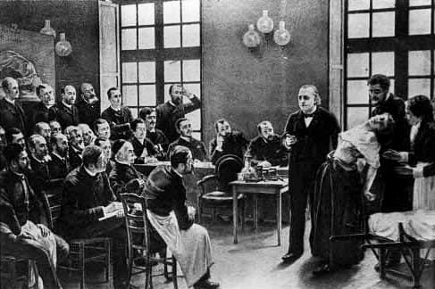

Parfois, au milieu d’une nuit silencieuse, les habitants des quartiers Saint-Marcel et Saint-Victor (les plus proches de l’hôpital) entendaient à intervalles réguliers sourdre une clameur, une sorte de gémissement sauvage. C’était « le cri de l’hôpital ». Retenues, réprimées pendant des mois, l’énergie et la fureur qui emplissaient l’âme de ces pauvres créatures croissaient lentement jusqu’à éclater ; une émeute se déclenchait alors entre elles, plusieurs milliers à la fois… avec leurs cris horribles. Ce cri d’alarme provenant de l’hôpital éveillait en nous un sentiment de terreurTémoignage cité par Stéphane-Pol dans Le Monde moderne, 1902..
Aujourd’hui enchâssé en plein cœur de Paris dans le XIIIe arrondissement, l’hôpital de la Salpêtrière se situait autrefois aux confins de la capitale. Il faut imaginer cet imposant édifice, le plus grand hôpital de Paris, et sans doute d’Europe aux XVIIe et XVIIIe siècles, qui accueillait jusqu’à 10 000 pensionnaires, isolé au milieu des champs. Bâtie sur un ancien arsenal où l’on stockait de la poudre à canon – du salpêtre, qui lui a donné son nom –, cette institution, successivement hôpital général sur décret du roi, espace religieux et prison, avant d’être dédiée aux soins est un lieu conçu pour accueillir des marginaux, et surtout des marginales.
En 1656, Louis XIV donne la maison de la Salpêtrière à l’hôpital général de ParisIl ne faut pas entendre ici hôpital dans son sens contemporain : il s’agit sous l’Ancien Régime d’un lieu d’enfermement des populations pauvres. pour accueillir les femmes, jeunes filles et enfants sans ressources. Il s’agit d’une nouvelle forme de répression de la pauvreté, qui vise à écarter de la société les indésirables en les enfermant plutôt qu’en les chassant. Dès 1684, une nouvelle catégorie de femmes rejoint les mendiantes et les pauvres : les débauchées. Sous couvert de lutte contre la syphilis, les prostituées, jugées au Châtelet, sont conduites en charrette jusqu’à la Salpêtrière, soumises à l’opprobre et aux huées tout au long du chemin, avant d’y être enfermées pour se voir redresser de leurs mauvaises mœurs. C’est le destin que connaît l’héroïne éponyme du roman Manon Lescaut de l’abbé Prévost, arrêtée par lettre de cachet.
Le bâtiment dit de la Force est construit en 1684 : ses murs extrêmement épais et ses petites lucarnes trahissent sa fonction carcérale. Des cellules d’un mètre cinquante sur deux mètres, quasi aveugles au jour et fermées par de lourdes portes, entourent une cour centrale. On peut encore observer, dans la rue des Archers qui jouxte l’ancienne prison, les maisons du XVIIe siècle où vivaient les Archers du roi chargés de la surveillance. Microsociété isolée du reste du monde et suivant ses propres règles, la Salpêtrière correspond bien à ce qu’Erving Goffman a nommé « institution totaleErving Goffman, Asiles. Études sur la condition sociale des malades mentaux, Paris, Minuit, 1968. » ou à ce que Michel Foucault, dans Surveiller et punir, a défini comme une « institution disciplinaire ».
Ce contrôle social, qui s’exerce notamment sur le corps des détenues, vise une catégorie spécifique de femmes incarcérées à la Salpêtrière, proportionnellement de plus en plus nombreuses au fil des siècles : celles qualifiées de folles, sorcières ou encore blasphématrices – les hystériques. Ce sont les femmes que, depuis les quartiers Saint-Marcel et Saint-Victor, on entend crier, dans une émulation collective qui provoque l’effroi, selon le témoignage d’un riverain cité en ouverture de ce texte, et qui laisse entrevoir l’horreur des conditions de détention et de vie entre les murs de l’hôpital général. Sans pour autant susciter de la compassion : le 4 septembre 1792, pendant ce qui est ultérieurement appelé les massacres de Septembre, des forces populaires parisiennes, excitées par les rumeurs et craignant des attaques contre-révolutionnaires issues des prisons, pénètrent dans l’hospice et forment un tribunal improvisé qui condamne puis exécute 8 % des détenues, probablement violées avant de mourir selon nombre d’historien·ne·s.
Il faut attendre le début du XIXe siècle pour que la Salpêtrière devienne un hôpital au sens contemporain. L’architecte Charles-François Viel est chargé de reconstruire des loges moins insalubres pour les aliénées, des petits chalets dotés de tabourets extérieurs sur lesquels elles peuvent s’asseoir enchaînées, selon les conseils du docteur Jean-Étienne Esquirol qui, en 1780, préconise les bienfaits de l’air pur sur leur état de santé. En 1795, le médecin-chef Philippe Pinel les libère de leurs chaînes et, bien que la visite des folles derrière leur grille constitue encore en 1810 une distraction du dimanche, on commence à essayer de les soigner.
Jusqu’au milieu du XIXe siècle, la folie est associée au sexe féminin, comme l’atteste l’étymologie du terme « hystérie » qui renvoie directement à l’utérus. La femme hystérique est représentée comme lascive et érotique, tout entière dominée par sa sexualité. Ainsi, en 1815, le médecin Jean-Baptiste Louyer-Villermay attribue les crises à un engorgement de l’utérus, quand son confrère Frédéric Dubois d’Amiens estime en 1830 qu’il s’agit d’une surexcitation de la matrice. La principale thérapeutique proposée par les médecins est donc le mariage et la sexualité qui l’accompagne ; à la Salpêtrière, des godemichets sont employés.
Dans La Fabrique du sexe, l’historien Thomas Laqueur décrit la manière dont un modèle binaire se substitue progressivement au modèle d’un sexe unique, selon lequel les femmes auraient les mêmes organes sexuels que les hommes mais rentrés à l’intérieur. Durant les années 1830 et 1840, on différencie le système nerveux et le cerveau des hommes et des femmes, présentés comme sexués. L’hystérie est alors identifiée comme une maladie nerveuse liée à l’encéphale, une maladie « de femmes ».
Ces descriptions médicales jouent un rôle important dans les représentations sociales. Dans son Traité clinique et thérapeutique de l’hystérie datant de 1859, le médecin Pierre Briquet assigne une place sociale à chacun des sexes, sur la base d’un portrait de l’hystérique. La nature féminine est toujours menacée de basculer vers l’irresponsabilité. Comme le souligne l’historienne Nicole Edelman : « la représentation d’une femme toujours menacée par la maladie et par les excès de son sexe s’installe, [… ce] qui fait de la femme un Autre dans le genre humainVoir bibliographie. ». Une altérité qui, selon elle, conduit à penser l’universel selon un unique référent masculin.
La Salpêtrière, institution qui a joué un rôle déterminant envers les hystériques, devient le lieu de sa propre rédemption : c’est là que Jean-Martin Charcot, inventeur de la neurologie scientifique au XIXe siècle, authentifie les phénomènes hystériques et découvre qu’ils ne sont pas l’apanage des femmes. Il organise des séances d’hypnose, au cours desquelles il fait montre de sa capacité à déclencher ou calmer des crises d’hystérie. Dans les Leçons sur les maladies du système nerveux, portant sur sept cas d’hystérie masculine, Charcot déclare que les symptômes hystériques sont dus à un choc traumatique provoquant une dissociation de la conscience et dont le souvenir reste inconscient ou subconscient (ce que Sigmund Freud, qui fut brièvement son élève, développe ultérieurement). La romancière Victoria Mas, dans Le Bal des folles, décrit cependant en Charcot l’ambiguïté d’un personnage à la tête d’une institution encore violente, qui organise des bals annuels de carnaval où le Tout-Paris vient côtoyer et moquer les hystériques.
L’histoire de l’hystérie à la Salpêtrière est un bon témoin de la construction conjointe des connaissances et de l’ordre social, car elle souligne la manière dont la description d’une maladie a affecté tout le genre féminin dans des dimensions aussi bien domestiques que politiques. Un aspect que met également en exergue Nicole Edelman, qui pointe « le rôle de la médecine et de ses constructions discursives dans les reclassements constants de la place de chaque sexe dans la sociétéVoir bibliographie. ».
Thomas Tari
Bibliographie
CARREZ Jean-Pierre, « La Salpêtrière de Paris sous l’Ancien Régime : lieu d’exclusion et de punition pour femmes », Criminocorpus [en ligne], 2008.
EDELMAN Nicole, « Représentation de la maladie et construction de la différence des sexes. Des maladies de femmes aux maladies nerveuses, l’hystérie comme exemple », Romantisme, 110, 2000, p. 73-87.
LAQUEUR Thomas, La Fabrique du sexe. Essai sur le corps et le genre en Occident, Paris, Gallimard, 1992.
MAS Victoria, Le Bal des folles, Paris, Albin Michel, 2019.
MICALE Mark S., « The Salpetriere in the Age of Charcot : An Institutional Perspective on Medical History in the Late Nineteenth Century », Journal of Contemporary History, 20 (4), 1985, p. 703-731.
Ancien bâtiment de la Force et puits de Manon Lescaut (1905). Photo : Paris Musées, Musée Carnavalet, CC0.
Femme malade de la Salpêtrière, service Charcot. Gravure : Paul Richer, musée de l’AP-HP.

La leçon de Charcot à la Salpêtrière. Peinture d’André Brouillet. Image : R. Engelmann, musée de l’AP-HP.
Massacre des prostituées à l’Hôpital de la Salpêtrière le 4 septembre 1792 à Paris. Estampe : imprimerie Prudhomme, Paris Musées, Musée Carnavalet, CC0.